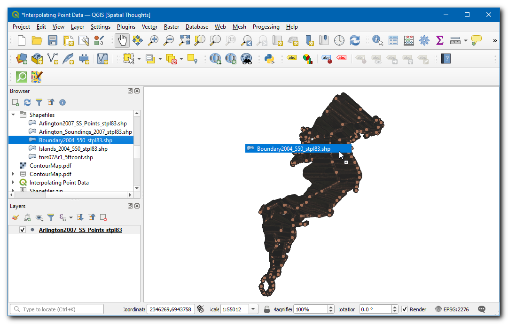
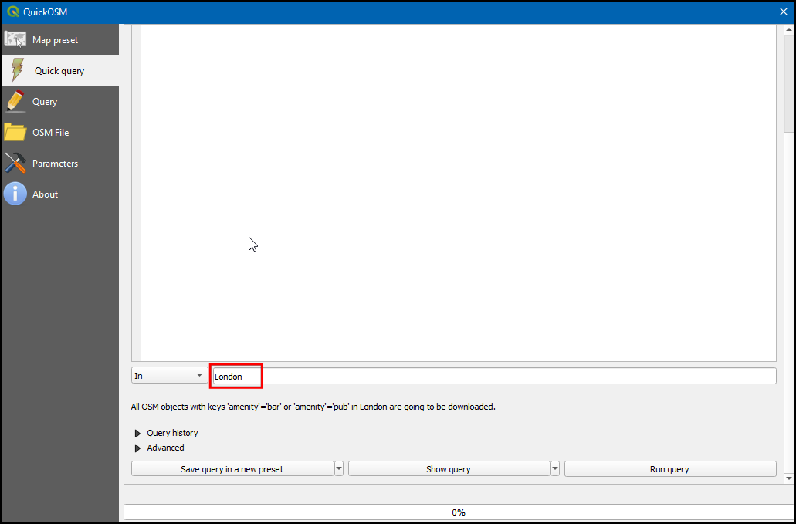
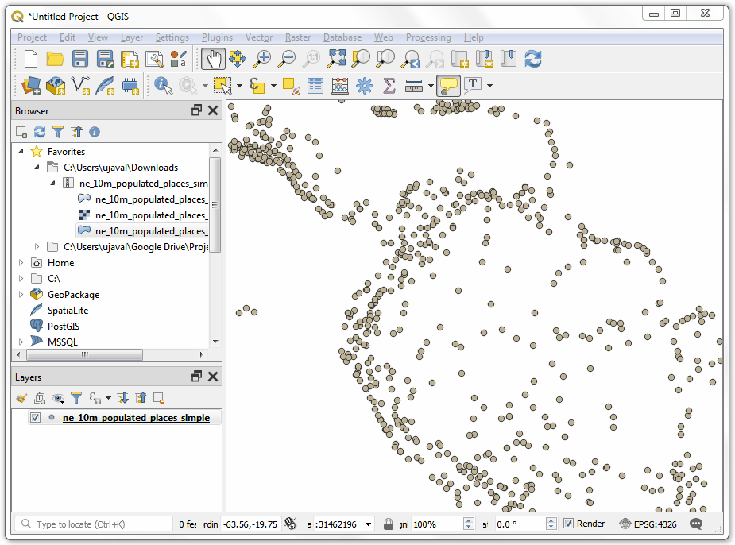

Ujaval Gandhi
Ujaval GandhiUsing Custom Python Expression Functions (QGIS3)¶
Expressions in QGIS have a lot of power and are used in many core features: selection, calculating field values, styling, labelling etc. QGIS also has support for user-defined expressions. With a little bit of python programming, you can define your own functions that can be used within the expression engine.
Overview of the task¶
We will define a custom function that finds the UTM zone number of a map feature and use this function to write an expression that displays the UTM zone as a map tip when hovered over the point.
Other skills you will learn¶
How to use the
Map Tipstool to display custom text when hovering over a feature.
Get the data¶
We will use Natural Earth’s Populated Places dataset. Download the simple (less columns) dataset
Procedure¶
Locate the
ne_10m_populated_places_simple.zipfile in the QGIS Browser and expand it. Select thene_10m_populated_places_simple.shpfile and drag it to the canvas.

Go to or click the Select features using an expression button on the Attributes Toolbar.

In the Select by Expression dialog, switch to the Function Editor tab. Here you can write any PyQGIS code that will be executed by the expression engine.

We will define a custom function named
GetUtmZonethat will calculate the UTM zone number for each feature. Since custom functions in QGIS work at the feature level. We will use the centroid of the feature’s geometry and compute the UTM Zone from the latitude and longitude of the centroid geometry. We will also add a “N” or “S” designation to the zone to indicate whether the zone is in the northern or southern hemisphere. Press the + button in the lower left of the screen and typeutm_zones.pyas the file name. You can click the Help label in the bottom panel to close it and expand the code panel.

UTM Zones are longitudinal projection zones numbered from 1 to 60. Each UTM zone is 6 degree wide. Here we use a simple mathematical formula to find the appropriate zone for a given longitude value. This formula works for all except a few special UTM zones. Type the following code into the editor window. When you are finished click Save and Load Functions.
import math from qgis.core import * from qgis.gui import * @qgsfunction(args=0, group='Custom', usesgeometry=True) def GetUtmZone(value1, feature, parent): """Return the UTM Zone of the feature's geometry as a string""" centroid = feature.geometry().centroid() if centroid: longitude = centroid.asPoint().x() latitude = centroid.asPoint().y() zone_number = math.floor(((longitude + 180) / 6) % 60) + 1 if latitude >= 0: zone_letter = 'N' else: zone_letter = 'S' return '%d%s' % (int(zone_number), zone_letter) else: return None

Nota
Currently there is no way to delete an expression file from the GUI. If you wish to delete the utm_zone.py file, you can go to and delete the file from .
Switch to the Expression tab in the Select by expression dialog. Find and expand the Custom group in the Functions section. You will notice a new custom function
GetUtmZonein the list. We can now use this function in the expressions just like any other function. Type the following expression in the editor. This expression will select all points that fall in the UTM Zone33N. Click Zoom to Features and the map will change, if you click Select Features you should see the points in UTM zone 33N change colour to yellow.GetUtmZone() = '33N'

Nota
Due to a bug, this feature did not work in earlier versions of QGIS 3. It has been fixed from version 3.4.5 onwards.
Back in the main QGIS window, you should see some points highlighted in yellow. These are the points falling in the UTM Zone we specified in the expression.
You saw how we defined and used a custom function to select features by expression. We will now use the same function in another context. One of the hidden gems in QGIS is the Map Tip tool. This tool shows user-defined text when you hover over a feature. Right-click the
ne_10m_populated_places_simplelayer and select Properties.
Switch to the Display tab. Here you can enter any text that will be displayed when you hover over the features of the layer. Even better, you can use layer field values and expressions to define a much more useful message. Click on the Ɛ button.

You will see the familiar expression editor again. We will use the
concatfunction to join the value of the fieldnameand the result of our custom functionGetUtmZone. Enter the following expression and click OK.concat("name",' | UTM Zone: ', GetUtmZone())

You will see the expression entered as the value of the Display text. Click Insert to add it to the HTML box and then press OK.

Before we proceed, let us de-select the features that were selected in the previous step. Go to or click the Deselect Features From All Layers button on the Attribute Toolbar.

Activate the
Map Tipstool by going to or clicking the Show Map Tips button on the Attributes Toolbar.
Zoom into any area of the map and put your mouse cursor over any feature. You will see the name of the city and corresponding UTM zone displayed as the map tip.

If you want to give feedback or share your experience with this tutorial, please comment below. (requires GitHub account)